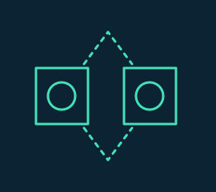
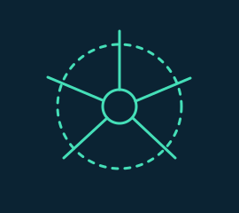
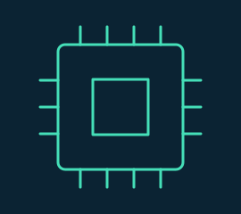
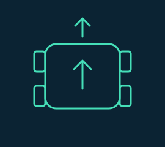

I am an engineer with practical experience across artificial intelligence, machine learning, computer vision, software engineering, robotics, embedded systems, and IoT.
My work spans research and industry, with a focus on building reliable systems for real-world problems. My background brings together Engineering Artificial Intelligence at Carnegie Mellon University Africa and Computer Science / Industrial IT at INES Ruhengeri.
WHAT DRIVES ME
Turning ideas into useful systems through discipline, creativity, and learning. I want my work to improve productivity, working conditions, and opportunities for others, while building a responsible family life and contributing to my community.
Research to implementationSoftware to hardwareLearning to shared opportunity
02 / EXPERIENCE
Engineering in practice.
Research, industry, and the next generation of problem-solvers.
JUN — AUG 2026Kigali, Rwanda
Carnegie Mellon University Africa
Graduate Summer Intern
AI Healthcare Research Laboratory · Digital Malaria Control for the Developing World
Engineered a high-resolution microscopy inference pipeline with Python, YOLO, Flask, and Docker.
Built traceable experiment workflows and tests for geometry, merged detections, and review flagging.
View Details +
Audited Flask APIs, model checkpoints, Docker configuration, microscopy datasets, annotation formats, and reproducibility gaps.
Analyzed 260 original images and an augmented 910/39/39 train/validation/test split across YOLO detection, YOLO segmentation, and COCO formats.
Preserved annotated images, raw and merged detections, JSON artifacts, settings, inference timings, failures, and review reasons. Prepared a Raspberry Pi benchmarking scaffold for future edge evaluation.
Taught robotics, programming, and engineering concepts to approximately 300 students using LEGO Mindstorms EV3 and Virtual Robotics Toolkit.
Guided sensor integration, troubleshooting, and engineering problem-solving through practical learning.
2024Kigali, Rwanda
Innovahyper Technologies
Electronic System Development Technician
Designed and prototyped microcontroller-based electronic devices and subsystems.
Developed dashboards for real-time device monitoring and control.
Conducted field testing and collected sensor data for prototype validation.
View Details +
Collaborated with engineers to design custom systems and optimize hardware configurations. Documented source code, diagrams, footage, and technical materials, and researched technologies according to project requirements.
03 / SELECTED WORK
Ideas, engineered.
A closer look at the problems, the process, and the systems.
High-resolution computer-vision workflow that processes microscopy images as overlapping tiles, remaps detections to full-image coordinates, and preserves traceable outputs for engineering review.
Engineering a traceable computer-vision workflow for high-resolution malaria microscopy.
Engineering research proof of concept
Clinical validation and edge-device evaluation remain future work. This is not a deployed medical device, a clinically validated diagnostic product, or a replacement for clinicians.
01 / THE PROBLEM
Small features. Large microscopy fields.
A native field can be 4032 × 3040 pixels, while the detector input is approximately 640 × 640. Shrinking the whole field first can leave very small parasite features with too few pixels. The engineering task was to preserve native detail and keep every prediction traceable to its source.
02 / MY CONTRIBUTION
From repository audit to reviewable output.
As a Graduate Summer Intern at CMU-Africa’s AI Healthcare Research Laboratory, I audited the repository, environment, microscopy datasets, and annotations; implemented tiled inference and coordinate tracking; and documented reproducibility risks.
Complete image tiles, overlap handling, full-image remapping, and class-aware NMS.
Experiment logging, structured JSON, image outputs, and engineering review flags.
Geometry and review-logic tests, technical documentation, and Raspberry Pi benchmarking preparation.
The experiment remained separate from the existing Flask/YOLO API. Supplied model weights were not altered. Personal contribution is grounded in the internship report; wider annotation work is identified separately below.
03 / WHY TILED INFERENCE
Preserve detail before running the model.
640 × 640Complete, unpadded crops
512 pxNominal stride
20%Nominal overlap
8 × 6 = 48Tiles for 4032 × 3040
The final tile on each axis is anchored to the image edge so all source pixels are covered. Its overlap may exceed 20%; the baseline does not pad or emit partial tiles. Images smaller than 640 pixels on either axis are rejected.
Enlarge ↗Native-resolution coverage: 48 complete tilesPM source field with a presentation grid computed from the actual tile-generator geometry. The source was not resized before calculating tile positions.
04 / PIPELINE
One field. A traceable path through inference.
01Original microscopy fieldKeep source resolution
02640 × 640 overlapping tilesStore tile ID and origin
03YOLO inference per tileProcess each complete crop
Enlarge ↗4. Tile-level model detectionsPresentation re-render of every saved raw detection for tile_r000_c001. Original coordinates and confidence values are retained; labels use two decimal places. No new inference.
Enlarge ↗5. Merged full-image outputActual saved full-image inference output after coordinate remapping and class-aware NMS. The complete annotated field is retained; boxes are model detections, not ground truth.
Enlarge ↗A closer look at the saved annotationsPresentation-only crop of the same merged output. The visible PF and WBC boxes and confidence labels are unchanged.
Read the labels carefully.
PF is the P. falciparum model class; WBC is the white blood cell model class, not a parasite species.
The decimal beside a box is model confidence. It is not accuracy, probability of disease, or diagnostic certainty.
06 / NMS & COORDINATE REMAPPING
Keep the coordinates. Handle the overlap.
A tile’s origin translates local coordinates into the original field. For example, the selected PF tile starts at (368, 0): add 368 to each local x coordinate, and 0 to y.
Full-image box = tile-local box + tile origin
Neighboring tiles can detect the same object. Class-aware NMS keeps the stronger same-class box when their overlap exceeds the selected IoU threshold. Different classes are retained for later review.
RAW DETECTIONS250233 PF · 17 WBC
→
AFTER CLASS-AWARE NMS10297 PF · 5 WBC
This run used confidence 0.10 and NMS IoU 0.50. These are experimental engineering settings, not clinical thresholds. A lower detection count is not evidence of higher diagnostic accuracy.
07 / EXPERIMENTAL EVIDENCE
Two saved runs, with bounded claims.
Example engineering runs — counts and recorded timings from saved summaries
Recorded field
Tiles
Raw → merged
Inference
PF · 1008 × 760
4
250 → 102
0.616 s
PM · 4032 × 3040
48
7 → 5
9.303 s
For the PM field, class counts changed from 5 PM / 1 PO / 1 WBC to 3 PM / 1 PO / 1 WBC. All 48 tiles were recorded as processed, with no tile failures. Retaining mixed classes does not establish a mixed infection.
Enlarge ↗PM example: merged outputSaved full-resolution output retaining PM, PO, and WBC model detections. The gallery loads the complete 4032 × 3040 annotated image for inspection.
Times are rounded from each run’s recorded total_inference_seconds. They are individual experimental observations, not system-wide performance or Raspberry Pi benchmarks. No sensitivity, specificity, or clinical accuracy is established here.
The pipeline emits one image-level engineering review flag after NMS. It checks for no parasite detections, failed tiles, weak dominant-species evidence, conflicting species evidence, and close competing scores. WBC detections are excluded from parasite-species scoring.
A real flagged run
A separate 4032 × 3040 PF field produced no retained parasite detections across 48 tiles. It was flagged for review rather than classified negative.
The scoring method averages up to the three strongest confidences per species. The 50% score threshold and 15 percentage-point ambiguity margin are engineering assumptions, not clinically validated rules.
09 / TESTING & TRACEABILITY
Software engineering around the model.
Engineering tests
Tile count, complete coverage, and in-bounds crops.
Coordinate remapping and class-aware duplicate suppression.
Missing, weak, conflicting, WBC-only, and failed-tile evidence.
These areas are covered by unit tests. Separate single-tile and full-image experiment scripts validate input dimensions, bounding-box validity, and write structured outputs; they are not clinical validation tests.
Evidence preserved
ANNOTATED IMAGE
RAW JSON
MERGED JSON
RUN SUMMARY
Artifacts retain model/class information, dimensions, settings, timings, tile failures, and review reasons. Public excerpts exclude private paths.
Dataset and annotation audit +
Audited/staged artifacts contained 260 original images and an augmented 910 train / 39 validation / 39 test split, spanning YOLO detection, YOLO segmentation, and COCO formats. These counts do not establish a clinically valid evaluation dataset.
Microscopy data was organized by parasite species, including PF, PM, PO, and PV. WBC is an additional model detection class. One staged taxonomy used 13 PF-stage and five WBC-subtype classes, which was not interchangeable with the application’s PF/PM/PO/PV/WBC class map.
10 / WIDER ANNOTATION WORKFLOW
Human Review & Feedback Loop
TEAM / PROJECT CONTEXT
The co-authored summer activity report describes a model-assisted annotation workflow using YOLOv10, Label Studio, Apache Airflow, MinIO, and Docker Compose. This is wider project context, not a claim that I individually built every component.
Apache Airflow orchestrates the workflow; Docker Compose connects the containerized services. Diagram recreated from the report’s workflow description.
The report’s example shows three detected WBC regions whose boxes needed adjustment, and one P. falciparum parasite missed by baseline inference. It illustrates the value of expert correction; it is not a measured false-negative rate.
Research direction: edge inference → difficult image → review flag → expert annotation → curated training data. The complete feedback loop is a prototype concept, not a clinically deployed production system.
11 / ENGINEERING CHALLENGES
Make the failure modes explicit.
Large fields, small model input
Preserve native detail with complete, overlapping crops.
Duplicate objects across tiles
Remap to one coordinate system and apply class-aware NMS.
Uncertain or conflicting evidence
Return an engineering review flag instead of forcing a diagnosis.
Inconsistent class taxonomies
Document incompatibility instead of silently mixing labels.
12 / LIMITATIONS & NEXT STEPS
A foundation for validation.
Establish an authoritative checkpoint and class map; pin the software environment.
Build leakage-free native-resolution validation and compare tiled versus whole-image inference against ground truth.
Calibrate confidence, NMS, and review thresholds.
Benchmark Raspberry Pi latency, memory, and thermal behavior.
Complete independent clinical validation before clinical use.
Tiling preserves image detail at the cost of more inference calls. This engineering proof of concept establishes a traceable workflow, not diagnostic performance.
Evidence: internship progress report; tiled-inference README, implementation, tests, and saved experiment artifacts. Wider project context: the co-authored Summer 2026 activity report. Only selected, metadata-free image derivatives and allowlisted summary fields are included publicly.
CASE STUDY / ROBOTICS & EMBEDDED
Baho Nurse-Bot
Healthcare Robotics & Embedded Systems
01 / OVERVIEW
Practical engineering for healthcare robotics.
Baho Nurse-Bot is a healthcare robotics project designed to support automated patient-measurement and hospital-monitoring workflows through embedded electronics and robotic-system integration.
Product context · HealthTech
The startup’s Hanga Central profile describes BAHO NurseBot as a solar-powered robot for health screening and referrals. Its stated aim is to help people understand their health metrics and share screening data with healthcare institutions to reduce complications and deaths from non-communicable diseases (NCDs).
In 2024, I collaborated with Innovahyper Technologies on Baho Nurse-Bot. My contribution focused on electronics integration, hardware troubleshooting, prototype development, and system testing.
Professional context · Innovahyper Technologies
Electronic System Development Technician · Kigali, Rwanda. My broader responsibilities included microcontroller-based prototyping, real-time monitoring/control dashboards, sensor-data field testing, collaborative hardware optimization, technical research, and documentation. These role responsibilities are not all claimed as Baho-specific deliverables.
03 / ENGINEERING WORK
Integrate, troubleshoot, test.
Contributed to electronics integration within the robotic prototype.
Troubleshot hardware issues during prototype development.
Supported system testing through collaborative engineering work.
Specific sensors, protocols, software languages, and measured performance are not documented in this case study.
Exhibiting the Baho Nurse-Bot prototype at Musanze Hanga Hub, Musanze sector. Open image ↗A short indoor view of the prototype’s head and upper body. Playback starts only when selected; the clip does not demonstrate patient measurements.
The work brought electronics integration, prototype development, and system testing together. It reinforced the importance of checking component behavior within the assembled system and working collaboratively through hardware problems.
CASE STUDY / IoT & EMBEDDED SYSTEMS
Vehicle Accident Detection & Notification System
IoT-Based Embedded Safety System
01 / OVERVIEW
From vehicle motion to an alert.
An IoT and embedded-systems prototype designed to detect sudden vehicle impacts, capture location information, and trigger real-time alerts for emergency response.
I developed this project as my Bachelor’s dissertation in Computer Science — Industrial Information Technology at INES-Ruhengeri in 2024, with the Kigali–Musanze road in Rwanda as the study context.
02 / PROBLEM
When reporting depends on a person.
An occupant may be unable to report an accident. This academic prototype explored automatic motion detection, location capture and remote notification, alongside immediate visual and audible feedback.
Reconstructed from the dissertation’s system design and appendix. The design names ESP8266 as central controller; the prototype description assigns that role to Arduino Nano. The available code verifies ESP8266 control and transmission, but does not resolve the complete controller hierarchy.
04 / HARDWARE & INTEGRATION
Connecting the physical system.
Sense & locate
ADXL335 accelerometer and NEO-6M GPS.
Process & communicate
Arduino Nano / ESP8266-based processing and GSM SIM900.
Indicate & interact
LCD I2C 16×2, LEDs, buzzer and push button.
Model vehicle
L298N motor driver and DC motors.
These components are documented in the design and prototype sections. The appendix directly shows ESP8266 firmware using Blynk for movement and lights, plus HTTP transmission of serial messages to a server endpoint.
The documented design combines motion sensing, GPS positioning and GSM communication so that a detected impact can trigger an alert with location context.
Local branch: LCD, LEDs and buzzer provide feedback. A separate server path supports monitoring. This is the documented functional flow; the included HTTP example uses fixed coordinates and does not verify live GPS-to-interface integration or guaranteed SMS delivery.
06 / PROTOTYPE & INTERFACE
From wiring to a visible result.
Actual prototype wiring and local display — dissertation Figure 15. Open image ↗
Model vehicle enclosure dissertation Figure 15. Open image ↗
Received messagesTimestamp search
Message
Accident detected · location link
Latitude / longitude
Demonstration coordinates
Timestamp
Recorded with the message
Clean recreation of the fields visible in Figure 14; illustrative content, not a live dashboard. The screenshot shows received messages, coordinates and timestamps. Settings, logs and alert configuration are described in the text but are not demonstrated by that screenshot.
07 / ENGINEERING JOURNEY
Learning through hands-on prototyping.
In this Hanga Hubs reflection, I discuss Smart Modern Tomato Farming, monitoring and automation, and learning to use equipment with the hub’s support. It offers context for my broader embedded-systems and IoT development.
Hanga Hubs engineering journey · 57 seconds · original audio and embedded English subtitles. The clip discusses a farming project and learning at the hub.
08 / CHALLENGES & LESSONS
Make each stage work together.
Meaningful motion: use acceleration measurements as input to the accident-condition logic.
Location and communication: connect a detected event with positioning and a remote alert path.
Immediate feedback: expose system status through the LCD, LEDs and buzzer.
The central engineering lesson is to verify each link—from sensor input to recipient—rather than treating a working interface as proof of the entire system.
09 / LIMITATIONS
A prototype with further work ahead.
Connectivity affects remote notification, and continued operation requires maintenance and updates. The available evidence does not quantify detection accuracy, GPS accuracy or alert latency, or establish deployment with emergency services.
Location and incident data introduce privacy and communication-security requirements for any production deployment. Encryption is discussed as a requirement, not verified as implemented.
CASE STUDY / ROBOTICS SOFTWARE
KwandaBot
ROS-Based Mobile Robotics Development
01 / OVERVIEW
Bringing robotics software into practice.
At KwaandaLabs, I worked under a one-month robotics development engagement focused on developing, programming and implementing a functional robot using the Robot Operating System (ROS).
ROS Robot Developer ContractKwaandaLabs · 10 March 2025 – 10 April 2025
02 / MY ROLE
Develop, program and implement.
My role focused on developing, programming and implementing a functional ROS-based robot according to KwaandaLabs’ requirements. This overview describes the broad engineering scope; the illustrations below explain general robotics concepts.
03 / ROS & ROBOTICS ENGINEERING
Connect software with robot behavior.
ROS provides a modular foundation for robotics software and communication between components. The engagement brought robot programming and practical implementation together, with hardware/software integration, testing and system-level debugging as engineering focus areas.
04 / SYSTEM CONCEPTS
A conceptual view of mobile robotics.
These original illustrations introduce sensing, computing and movement. They are technology references, not the KwaandaLabs robot’s hardware list or internal design.
Sensing
ROS software
Robot state / perception
Decision / control
Mobile platform

Depth sensingSpatial information can support obstacle awareness and perception.

LiDAR / mappingDistance measurements can describe surrounding geometry for mapping and navigation.

Embedded computingOnboard computing can support robot software and device communication.

Mobile platformA physical base connects control commands with movement.
Reference concepts only. Exact sensor models, computing hardware and navigation features are not attributed to this project.
05 / DEVELOPMENT PROCESS
From requirements to implementation.
A high-level view of the engineering workflow, without internal implementation details:
Requirements
Robot setup
ROS development
Hardware/software integration
Testing
Debugging
Final implementation
06 / SKILLS APPLIED
Robotics software and integration.
ROSRobot ProgrammingRobotics IntegrationSystem TestingDebuggingHardware/Software IntegrationTechnical Problem Solving
07 / PROFESSIONAL TAKEAWAYS
Think across the whole robot.
Robot development connects software behavior with a physical system. The work reinforced the importance of clear requirements, careful integration and methodical debugging when moving toward a functional implementation.
04 / TECHNICAL TOOLKIT
Across the stack. Grounded in engineering.
Tools and methods for building, testing, and understanding systems.
{kind=link}
{kind=link}
{kind=link}
{kind=link}
{kind=link}
{kind=link}
{kind=link}
{kind=link}
{kind=link}